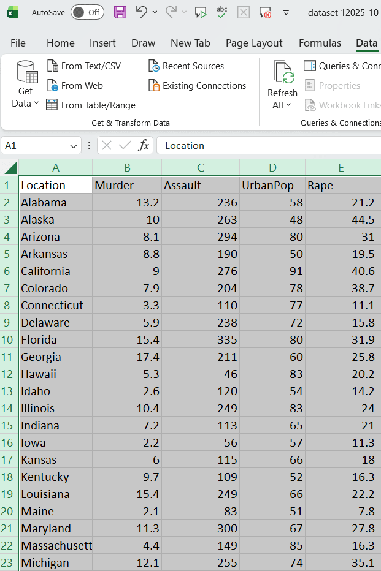
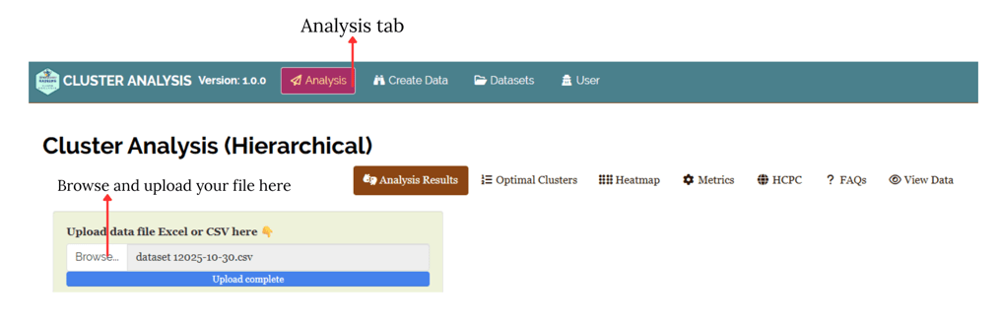

Hierarchical Cluster Analysis in RAISINS
—————1, Dr Pratheesh P Gopinath2
1Statoberry LLP, 2Department of Agricultural Statistics, Kerala Agricultural University,
Hierarchical Cluster Analysis (HCA) is a statistical method used to group similar data points into clusters based on their characteristics, building a tree-like structure to show how these groups form. In RAISINS (R and AI Solutions for INferential Statistics), a web-based platform for statistical analysis, HCA is implemented using R packages like FactoMineR. It’s particularly useful in agricultural research for categorizing genotypes, treatments, or traits by minimizing within-cluster distances and maximizing between-cluster differences. The process starts with individual data points and merges them iteratively into larger clusters, visualized through dendrograms.
Below is a compact, practical guide you can use as a tutorial to perform Hierarchical Cluster Analysis in RAISINS.
How to Prepare Your Data?
Proper data preparation is crucial for accurate HCA results in RAISINS. The platform guides users through preprocessing, but following best practices ensures reliability. What truly matters is the quality of your data! As the saying goes, “garbage in, garbage out” - and this holds true for any software.
To prepare your dataset for analysis in RAISINS, you have two options:
- Create your dataset in MS Excel
- Build your dataset directly within the RAISINS app
Preparing data in MS Excel
RAISINS allows for analyzing multiple characters simultaneously. So you can enter the observations for all characters for a particular set of treatments in a single excel file.
1. Creating a Data File in MS Excel
Open a new microsoft excel file, use single sheet only.
Start with Cell A1: Open a new MS Excel file and begin entering data from cell A1. Do not leave any blank rows above.
First Row - Column Names: The first row must contain the column names.
Column 1: Enter treatment/labels. There should not be any repetition in the label ID’s. If there is replications, you can use the mean values.
From Column 2 Onwards: Enter the names of each character(variable) under study as separate columns (e.g.Murder, Assault, UrbanPop, Rape). You can give any names to the columns.
See Figure 1 showing how the prepared Excel file for upload should look like

2. File Format Recommendation
- In RAISINS you can upload file in xls, xlsx or csv format. But we recommend a csv format as it will be much lighter.
Follow the below steps save your Excel file in csv format.
Open your Excel file.
Click on File in the top-left corner.
Select
Save Asfrom the menu.Choose the location where you want to save the file.
In the Save as type dropdown menu, select
CSV (Comma delimited) (*.csv).Enter a name for your file.
Click Save.
3. Naming Columns and Treatments
Keep It Simple and Straight (KISS): Use simple and short names for column headers.
Avoid Complexity: Do not include units, special characters, or spaces in names (e.g., use char1 instead of Character 1). This helps ensure the names appear neatly in plots and outputs.
This helps ensure the names appear neatly in plots and outputs.
Dataset Creation Rules
- Column Naming Convention
- No spaces allowed in column names.
- Use underscores (
_) or full stops (.) for separation. - Avoid symbols and special characters like %,# etc
- No spaces allowed in column names.
- Data Arrangement
- Start data arrangement towards the upper-left corner.
- Ensure the row above the data is not blank.
- Start data arrangement towards the upper-left corner.
- Cell Management
- Avoid typing or deleting in cells without data.
- If needed, select affected cells, right-click, and select Clear Contents.
- Avoid typing or deleting in cells without data.
- Column Relevance
- Name all columns meaningfully.
- Exclude unnecessary columns not required for analysis.
- Name all columns meaningfully.
4. Creating Data Using the App (Recommended Method)
Navigate to
Create DataTab: Click on the Create Dataset tab in the main menu at the top of the app.Specify Details: Enter the levels of Factor A, Factor B, Factor C and number of characters under study in the window that opens.
Then click
createModel Data Entry File: A template for data entry will be generated. You can:
Directly enter your data into this template.
Or, copy-paste data from an existing Excel file.
Download as CSV: Once the data is entered, click on the
Download CSVFile button. The downloaded CSV file can be uploaded for analysis inAnalysis tab.
Uploading the Data File for Analysis
Upload the Prepared CSV/XLS File: Go to the
Analysis tab(See Figure 2) and upload your prepared data file.Ensure Clean Data: Keep the file focused on the data; avoid adding any extra information or notes outside the data area.
By following these instructions, you will have a well-prepared data file ready for analysis, allowing you to process multiple characters together.

Dendrograms
A dendrogram is a tree-like diagram that visually represents how hierarchical clustering groups data step by step, allowing you to explore relationships and cluster formation within a dataset. A dendrogram displays the process of merging (or sometimes splitting) clusters during hierarchical cluster analysis.
Step-by-Step: How to read a Dendrogram ?
Start at the bottom - Each leaf represents a single observation or sample.
Follow the lines upward - The first merges connect the most similar items. These connections indicate that the points or small clusters joined are very close based on the chosen similarity measure.
Merging clusters - As you go higher, clusters are combined with others, and each branching indicates additional clustering - think of it as building a family tree for your data.
Branch heights - The height at which branches merge tells you how similar the merged groups are-the lower the connection, the more similar the groups.
Deciding number of clusters - By “cutting” the tree horizontally at a given level (distance threshold), you divide the data into clusters-each branch below the cut line forms a cluster.
RAISINS is designed for a smooth and hassle-free experience. Once you click the Run Analysis button, all relevant results and outputs appear instantly-leaving no room for confusion. We’ve ensured that every possible dendrogram related to the Hierarchical Cluster analysis is readily available. Color-Coded Clusters dendrogram performed with the complete linkage method and euclidean distance metric, identified through elbow method, resulting in 2 clusters is available by default and each plot comes with a gear icon at the top-left corner, allowing you to customize its appearance. You can also download these plots in high-quality PNG (300 dpi), TIFF or PDF formats for use in reports or presentations.